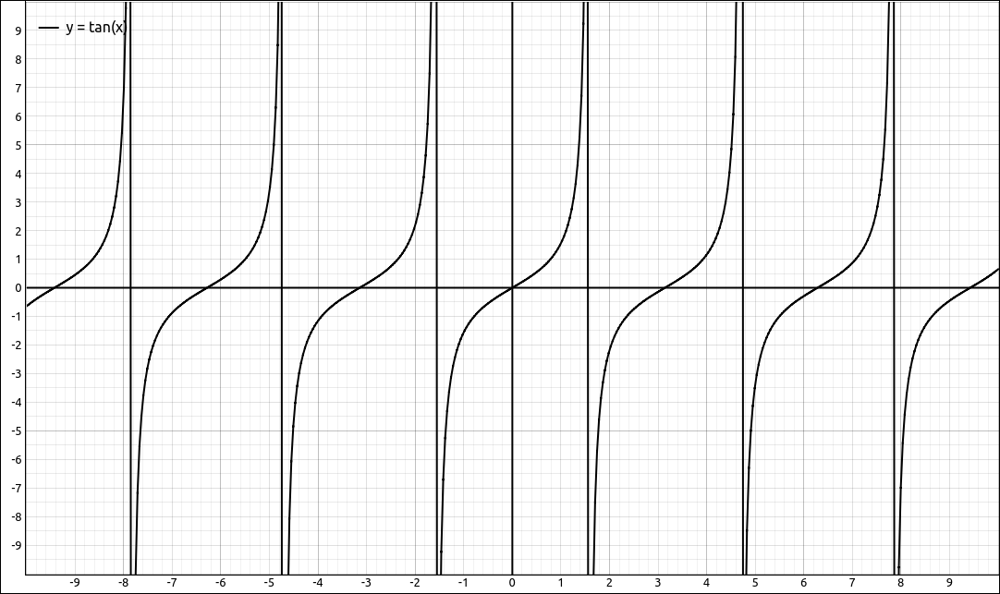
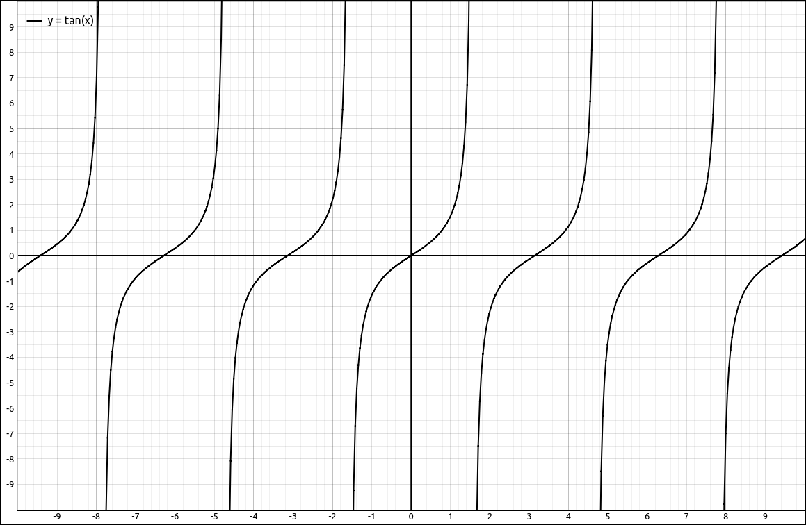
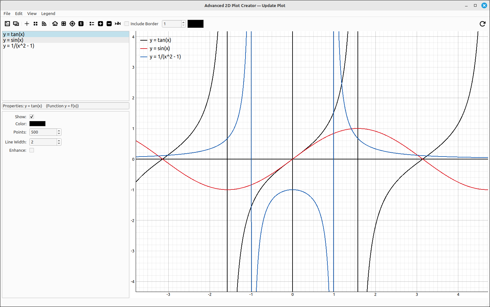
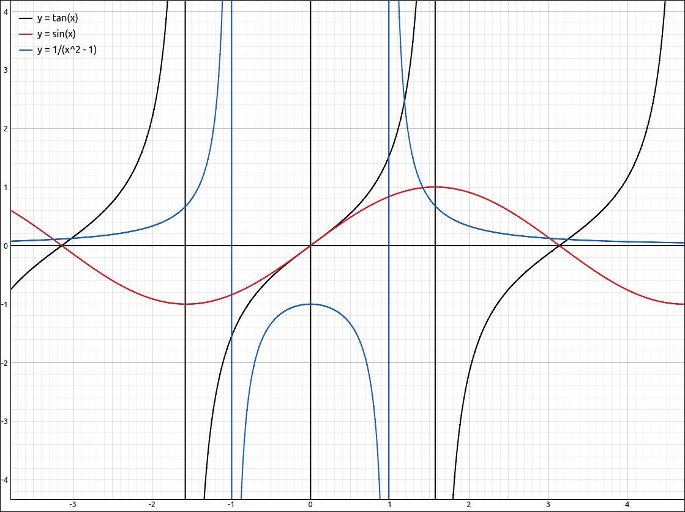
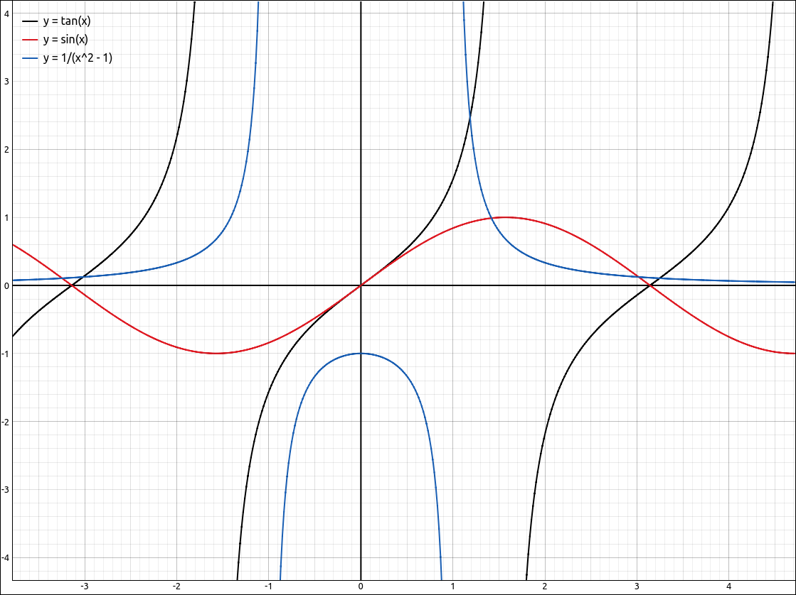

Advanced Plot Creator#
Introduction#
This opens the current graph in the Advanced Plot Creator tool. The graphics systems in CLAE were designed to be as fast as possible. The goal was for quick navigation of the plots and minimal lag. To achieve this, more advanced graphing techniques needed to be dropped and quicker, but less visually pleasing, techniques used. This is why you see asymptotes in plots. For example, with \(y = \tan{\left(x \right)}\), the plot looks like,

\(y = \tan{\left(x \right)}\)#
when it should look like,

\(y = \tan{\left(x \right)}\)#
The top image is fine in a classroom or exploration setting since the asymptotes can easily be explained away or ignored as part of the graph. On the other hand, for a report or handout we would want an image more like the bottom one. This is why we created the Advanced Plot Creator for 2D graphs. This tool will enhance certain categories of plots to make them more visually pleasing (and accurate), primarily for use in reports or handouts. The enhanced mode of graphing uses adaptive methods around singularities to remove the graphing of asymptotes and make the curve as detailed as possible close to the function singularities. As a result, these graphs will, in most cases, not be real time.
The types of graphs that have an enhanced mode are,
Functions \(y = f(x)\).
Polar Functions \(r = f(\theta)\).
Parametric Equations \((x, y) = (f(t), g(t))\).
Polar Parametric Equations \((r, \theta) = (f(t), g(t))\).
Piecewise Defined Expressions in Rectangular Coordinates.
Piecewise Defined Expressions in Polar Coordinates.
If you are graphing other types of plots they are still loaded into this tool and you can still alter their attributes but the graphical image is the same as in the main program. In addition, if you are graphing functions without singularities, this tool will not produce any better images than what the main graphing system will produce.
Note
When the objects are loaded into this tool the slider values are automatically substituted into the object expressions and are constants in this tool.
Tool Layout#
The tool layout is fairly simple, a standard menu and toolbar at the top, the main graph on the right, a list of objects in the upper left, and the properties of the selected object in the lower left.

Advanced Plot Creator Layout#
Tool Usage#
The best way to use this tool is to do the following,
In the main graph, include the functions and objects you want in the image and set the bounds on the graphics window to be the view you want in the final image. In addition, set any sliders to the values you want to use, this tool does not have animation built into it as does the main graph area. When the objects are loaded into this tool the slider values are automatically substituted into the object expressions and are constants in this tool.
Invoke this tool with,
View > Open in Advanced Plot Creator.Go through the list of objects in the upper left and set the properties you want for each of them. Note that when you select an object from the list the properties for that object will appear in the properties box in the lower left. Also note that you do not get all the properties as you would from the settings in the main graph area. In this tool, you cannot add any plots to the graph or alter an attribute of the graph that changes the data of the object, just the way the object appears.
Make sure that the
Enhanceoption is checked for any curve you wish to remove asymptote artifacts. If the function has no asymptote artifacts then the enhance mode will not result in any better image.Set the image size to what you want by changing the window size and/or the divider between the graph and the object list.
Click the
Update Plottoolbar button on the far right of the toolbar. The percentage of completion for each enhanced object will appear in the list of objects as the plot continues. When a plot is finished the updated image will be in the graph area.Export the image to a file or clipboard for use in your document.
Note that you can move the graph around as you would in the main graph area and alter the number of points or grids used in the plotting. When a change is made that requires regraphing of the plot area the program will drop into the quick mode, which is used for the main graph area. If this happens there is a note in the title bar telling the user to update the plot.
As an example, after graphing in the quick mode we get the same image as in the main graph area.

Image after quick graphing mode.#
Then after clicking the Update Plot toolbar button (and subsequently graphing the curves in enhanced mode) we get the following image.

Image after enhanced graphing mode.#
Tool Options#
The menu and toolbar options are,
Save Plot to Image File: Saves the current image to a file. When invoked, a save as dialog box will appear asking the user for a filename. The default will save the image as a PNG file (probably the best format for graphs), if the user includes a known extension (such as .jpg or .bmp) the program will save the image in that format.
Print Plot: This will send the plot to the printer. When invoked, a dialog box will appear allowing the use to set the printing options.
Print Preview Plot: This will open the image in a print preview dialog box that will allow the user to view the printed image as well as set other printing attributes and print the image.
Copy Plot as Image: Copies the current image to the system clipboard.
Snapshot Viewer: Opens the Snapshot Viewer tool with the current image.
Show All Plots: Turns on the graphing of all objects in the list.
Hide All Plots: Turns off the graphing of all objects in the list.
Enhance All Plots: Turns on the enhanced mode for all objects in the list that have an enhanced mode.
Disable Enhance on All Plots: Turns off the enhanced mode for all objects in the list that have an enhanced mode.
Toggle Axes: Toggles the graphing of the coordinate axes.
Toggle Grid: Toggles the graphing of the coordinate grid.
Toggle Polar Grid: Toggles the graphing of the polar grid.
Reset View Window: Resets the viewing window to [-10, 10] X [-10, 10].
Center at Origin: Resets the center to the origin, keeping the current aspect ratio.
Translate center to (x, y): Sets the center to the input point, keeping the current aspect ratio.
Set View Window to 1-1: Sets the aspect ratio to 1, by altering the y-axis to match the x-axis. The center of the grid is unaltered.
Snapshot: Opens the snapshot viewer with the current image.
View Information: Opens an information dialog box displaying the viewing ranges and center.
Toggle Legend: Toggles the viewing of the graph legend.
Increase Legend Font Size: Increases the font size of the legend.
Decrease Legend Font Size: Decreases the font size of the legend.
Reset Legend Font Size: Resets the font size of the legend.
Border Tools: These options are only in the toolbar. The first is to select if a border is to be drawn or not. The second tool is the border width to use and the third tool is the color of the border. When the border is selected you will not see the border on the current plot but it will be included in any image files that are saved, copied images, and printed images.
Update Plot: This is at the far right of the toolbar. This option will update the graph using the enhanced mode on any object that has its enhanced mode checked.